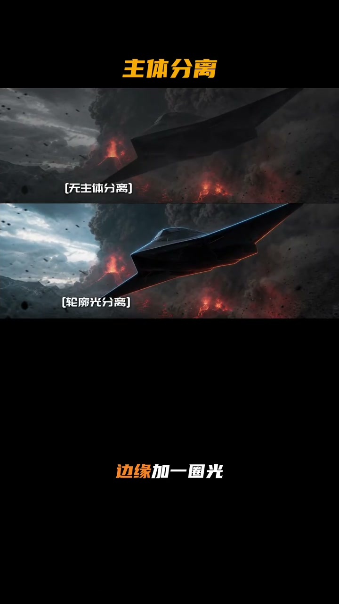
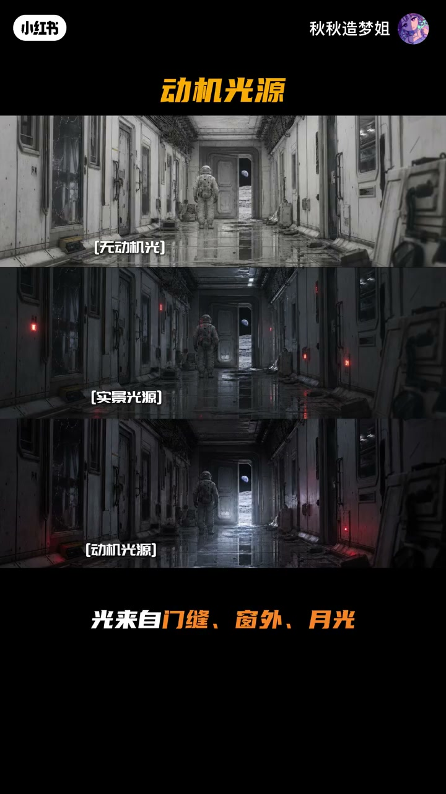
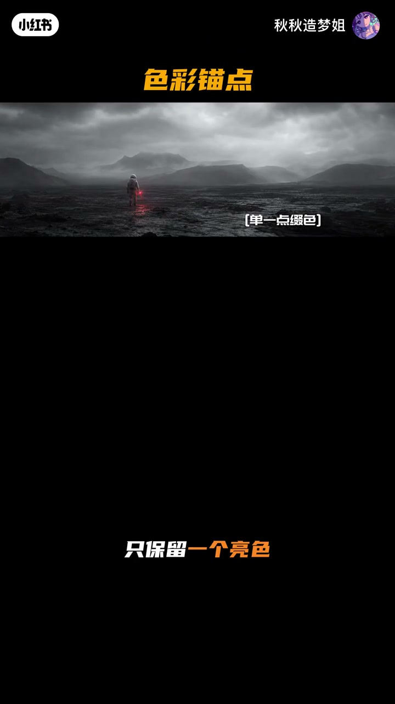
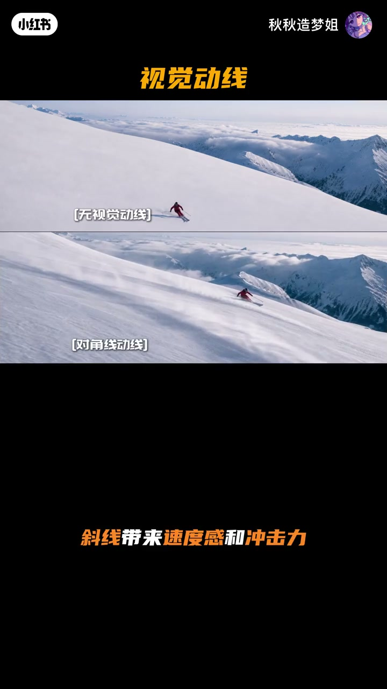

内容要点
同一作者用五组「视觉设计」对照卡，教你往 AI 画面里写可执行提示词：主体如何分离、光是否有动机、巨大感靠什么参照、色彩如何锚点、视线走哪条动线。meta 标题为空，以画面组名与口播为准；约 47 秒扫完五组。
知识结构
无分离糊在一起；轮廓光边缘一圈光跳出；对比分离靠明暗也能突出。
无动机光不知从哪来；实景光源（灯管／屏／警示灯）更可信；动机光来自门缝窗外月光更有故事。
人物／多层参照让巨大感成立；一点缀色、色彩隔离、主导色抓视线并统一。
无动线不知先看哪；对角线有速度冲击；S 型曲线引导更流畅。
五组提示词的共性是「先写结构关系再写风格」：分离、光源动机、尺度参照、色彩锚点、视线路径。每组都用无／有对照，方便直接粘贴进 prompt。
00:00-00:09主体分离：轮廓光与对比
无主体分离时主体与背景糊在一起，看不清重点。轮廓光分离在边缘加一圈光，主体立刻跳出来；对比分离则拉开明暗，不加光也能突出主体。
00:05 轰炸机夜景对照「[无主体分离]」与「[轮廓光分离]」，橙红轮廓光是最直观的写法示范。

00:09-00:19动机光源：无动机 / 实景 / 动机
无动机光：画面有光却不知道从哪来。实景光源（画面标签；ASR 误作「十几光源」）让灯管、屏幕、警示灯出现在画面里，光线更可信。动机光源则说来自门缝、窗外、月光，画面更有故事。
00:17 太空舱三格把三种光源策略钉在同一走廊场景上。

00:19-00:39尺度参照与色彩锚点
无尺度参照时只写「巨大」，观众不一定感受得到；放一个小人物，或人物+车辆+平台多层参照，巨大感与空间真实性立刻上来。
色彩锚点三法：单一一点缀色只保留一个亮色抓住视线；色彩隔离压低环境色突出主体色；主导色用一种颜色控制整张图，氛围更统一。00:31 灰调荒原一点红光是「只保留一个亮色」的教科书帧。

00:39-00:47视觉动线：对角与 S 型
无视觉动线时画面干净却不知先看哪里。对角线动线用斜线带来速度感与冲击力；S 型动线用曲线引导视线，画面更流畅。
00:43 滑雪坡「[无视觉动线]」与「[对角线动线]」对照，把构图动词直接写成可抄提示词。

完整转录（45段）
以下文本由 Whisper medium 模型自动转录，可能存在少量识别误差，已尽可能修正。
这是无主体分离
主体和背景糊在一起
看不清重点
这是轮廓光分离
边缘加一圈光
主体立刻跳出来
这是对比分离
拉开明暗关系
不加光也能突出主体
这是无动机光
画面有光
但不知道光从哪来
这是十几光源
灯管 屏幕 警示灯
出现在画面里
光线更可信
这是动机光源
光来自门缝 窗外 月光
画面更有故事
这是无尺度参照
直写巨大
观众不一定感受得到
这是人物尺度参照
放一个小人物
巨大感马上出来
这是多层尺度参照
人物 车辆 平台一起出现
空间更真实
这是单一点追色
只保留一个亮色
视线马上被抓住
这是色彩隔离
压低环境颜色
只突出主体颜色
这是主导色
一种颜色控制整张图
分为更统一
这是无视觉动线
画面干净
但不知道先看哪里
这是对角线动线
斜线带来速度感和冲击力
这是S型动线
曲线引导视线
画面更流畅